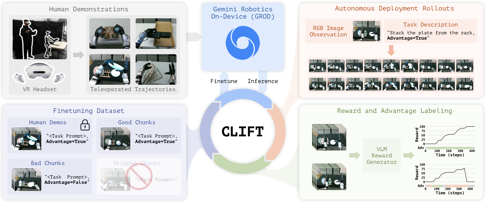
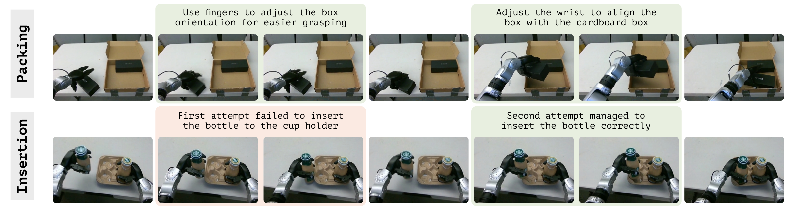

Step 1 · Bootstrap
Demonstration-Trained Policy
The loop starts from an initial policy obtained by fine-tuning the base model on teleoperated demonstrations through the managed SFT API — the only available update operation.
While robot foundation models are growing increasingly capable, the strongest models are typically trained on proprietary data and have traditionally remained closed-source, limiting downstream users' ability to adapt them to new tasks, embodiments, and deployment settings. Following the LLM community, an emerging access paradigm for closed-weight robot foundation models is the managed supervised fine-tuning (SFT) API, where users submit training data and receive a tuned policy without access to model weights, gradients, or training internals.
While such APIs let downstream users leverage powerful proprietary foundation models, they restrict policy improvement to pure imitation, ruling out classical reinforcement learning and other closed-loop methods that rely on internal training signals. This limitation is particularly acute for agile, contact-rich humanoid manipulation, where the gap between policy outputs and deployed behavior is large due to novel states, action tracking dynamics, latency, and controller-specific failure modes.
We conduct one of the first empirical studies of managed-API adaptation on a real humanoid, instantiated on Gemini Robotics On-Device (GROD). Direct SFT through the API already substantially outperforms a leading open-weight VLA trained on the same demonstrations, yet still falls short of deployment-level mastery on agile, contact-rich tasks. To close this gap, we introduce CLIFT: Closed-Loop Iterative Fine-Tuning, which turns deployment-time reward feedback into API-compatible supervised data and enables closed-loop policy improvement without accessing weights, gradients, likelihoods, or losses — pushing GROD to near-perfect success after two flywheel cycles, all without “opening the model box.”
Method
We access the foundation VLA only through a managed SFT interface — a black-box operator that maps a dataset of observation–instruction–action-chunk tuples to a fine-tuned policy, exposing no weights, gradients, losses, or action likelihoods. Standard RL is incompatible with this interface: PPO needs log-probabilities and backpropagation, and advantage-weighted regression reweights losses — neither is exposed. Our key insight is that the reinforcement signal can be encoded directly into the supervised training data, letting the SFT API perform RL-style policy improvement without modifying the model or training procedure.

Step 1 · Bootstrap
The loop starts from an initial policy obtained by fine-tuning the base model on teleoperated demonstrations through the managed SFT API — the only available update operation.
Step 2 · Reward
A select-then-distill scheme: human pairwise preferences select calibrated rewards from VLM-generated candidates, which are distilled into a reusable dense reward model that scores task progress, execution quality, and safety at every step.
Step 3 · Advantage
Each action chunk is scored by its discounted return and compared, via visual retrieval, against chunks from similar starting states. Top-returning chunks are labeled positive, the rest negative — auto-calibrating credit assignment to state difficulty.
Step 4 · Iterate
Relabeled rollouts are appended to a cumulative dataset and the base model is re-fine-tuned from scratch each cycle (avoiding distributional drift), then the loop repeats — reaching task mastery after just two cycles.

Experiments
We evaluate on a real Unitree G1 humanoid across three agile, contact-rich tasks of increasing complexity. Although tabletop, they are not fixed-base problems: the humanoid balances with its whole body throughout, so lower-body motions continually shift the camera viewpoint, end-effector pose, and contact geometry seen by the policy. Demonstrations are collected through whole-body VR teleoperation, and the policy is deployed on the same robot–controller stack used for evaluation.


On GROD, two flywheel cycles lift the demonstration-trained policy to near-perfect success across all three tasks — all through API-only access, with no additional human demonstrations.
The identical pipeline — same reward model, rollout budget, and advantage relabeling — also improves the open-weight π0.5, demonstrating that the non-invasive mechanism transfers across foundation models and access regimes.
Foundation-model choice matters even under API-only adaptation. A stronger model adapted through a narrow SFT interface outperforms a weaker model granted full internal access via FiLM-style invasive conditioning.
Closed-loop practice elicits corrective and pre-manipulation behaviors absent from the demonstrations, such as reorienting an object before grasping or retrying a failed insertion.
Results

Two flywheel cycles of CLIFT push GROD to near-perfect success — 93→100% on Box Packing, 70→98% on Cup Insertion, and 53→96% on Bimanual Plate Handover — using only the managed SFT API, with no additional human demonstrations and without ever accessing model weights, gradients, likelihoods, or losses.
Task success rate (%) over 100 trials per task. CLIFT uses the dense advantage-conditioned variant. Highlighted rows are CLIFT-adapted policies.
| Foundation Model | Access Regime | Stage | Box Packing | Cup Insertion | Bimanual Plate Handover |
|---|---|---|---|---|---|
| Gemini Robotics On-Device | Closed-weight (API-only) | SFT baseline | 93 | 70 | 53 |
| Gemini Robotics On-Device | Closed-weight (API-only) | + CLIFT (2 cycles) | 100 | 98 | 96 |
| π0.5 | Open-weight | SFT baseline | 59 | 50 | 5 |
| π0.5 | Open-weight | + CLIFT (2 cycles) | 76 | 56 | 30 |

We provide one of the first empirical studies of managed-API adaptation on a real humanoid. Direct SFT through the API already substantially outperforms a leading open-weight VLA trained on the same demonstrations, yet still falls short of deployment-level mastery. CLIFT closes this gap by turning deployment-time reward feedback into API-compatible supervised data, pushing Gemini Robotics On-Device to near-perfect success after two flywheel cycles. This shows that managed SFT APIs can serve not only as customization interfaces, but as practical interfaces for closed-loop policy improvement — offering a path toward task mastery without “opening the model box.”